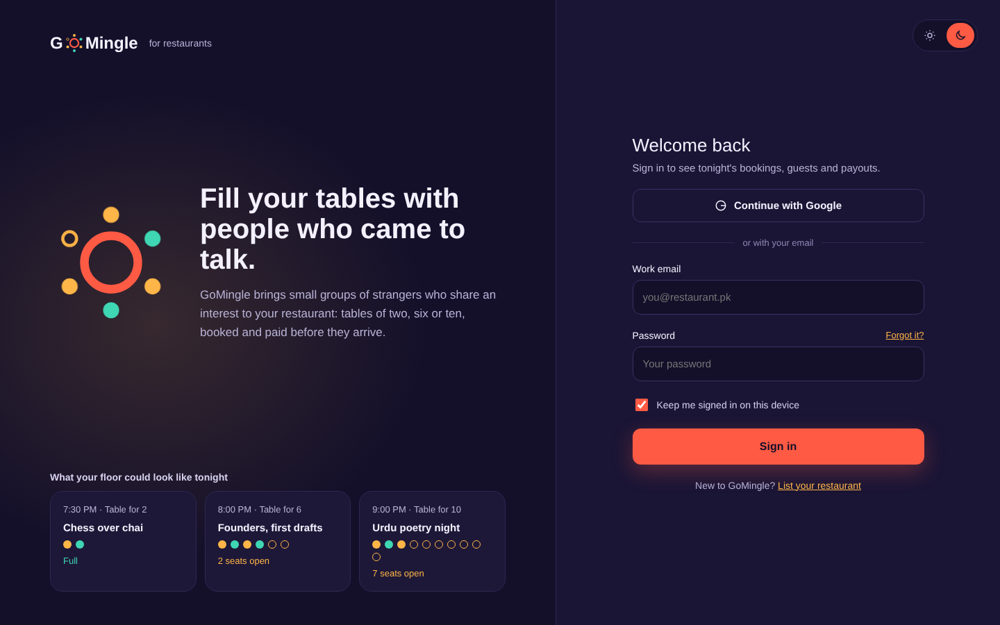
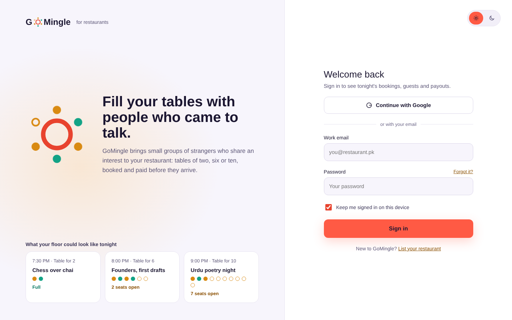
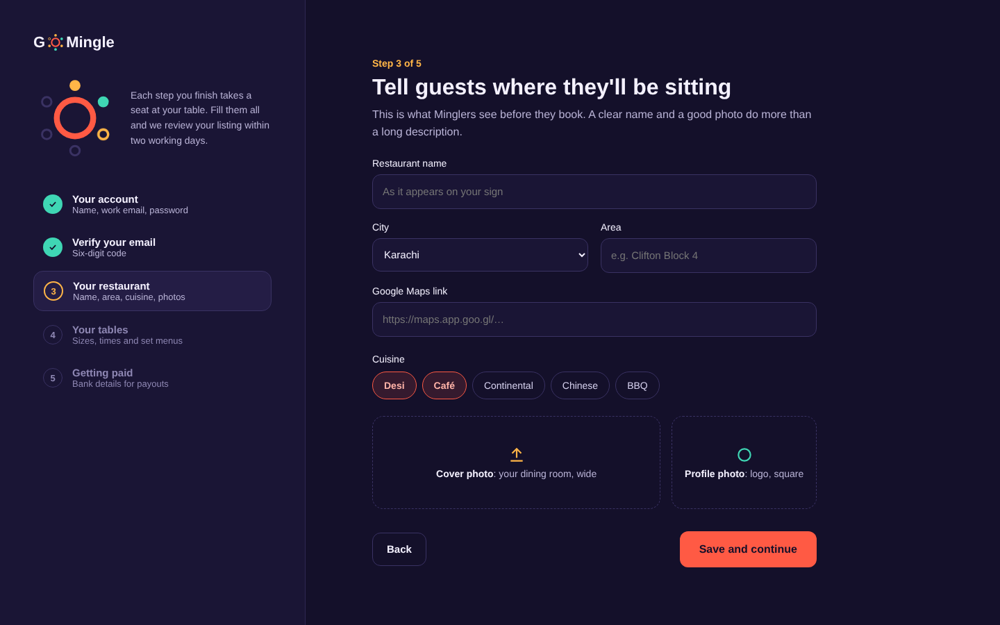
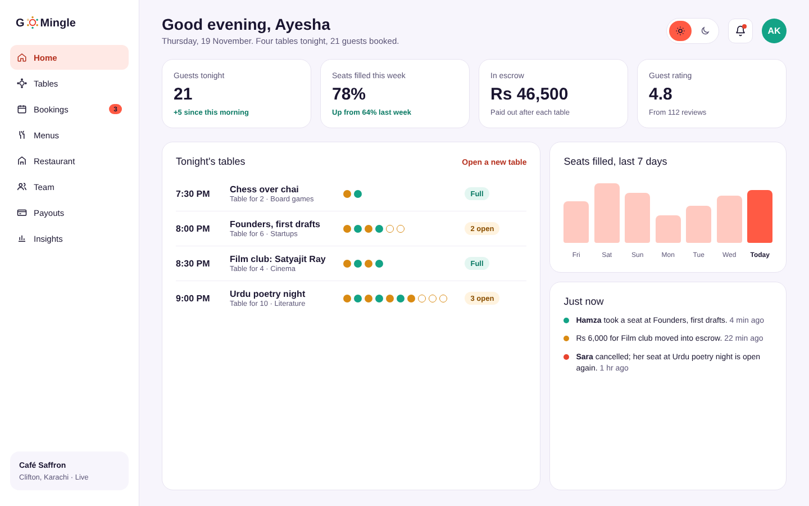
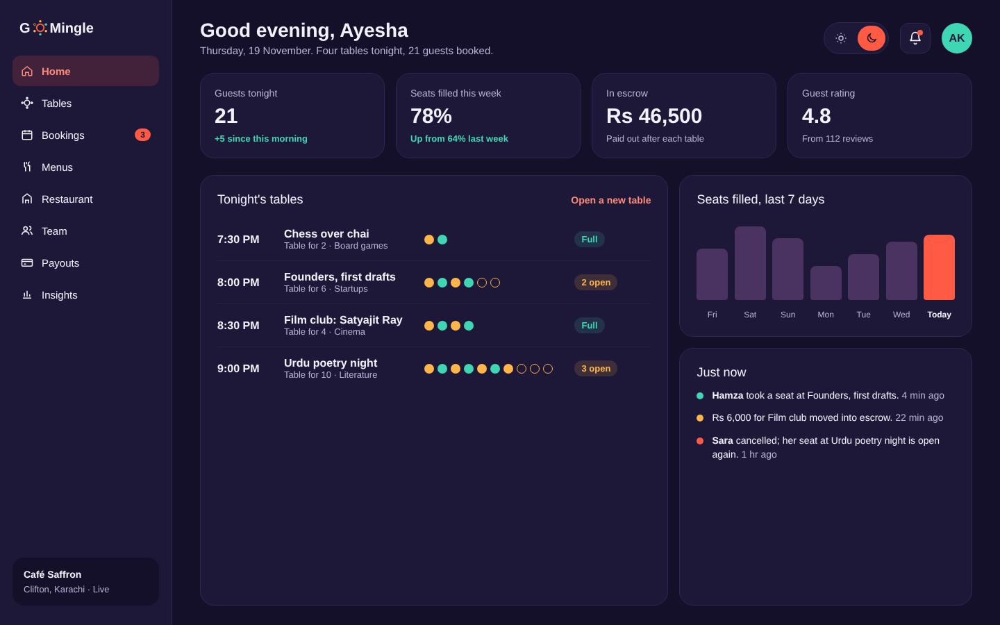
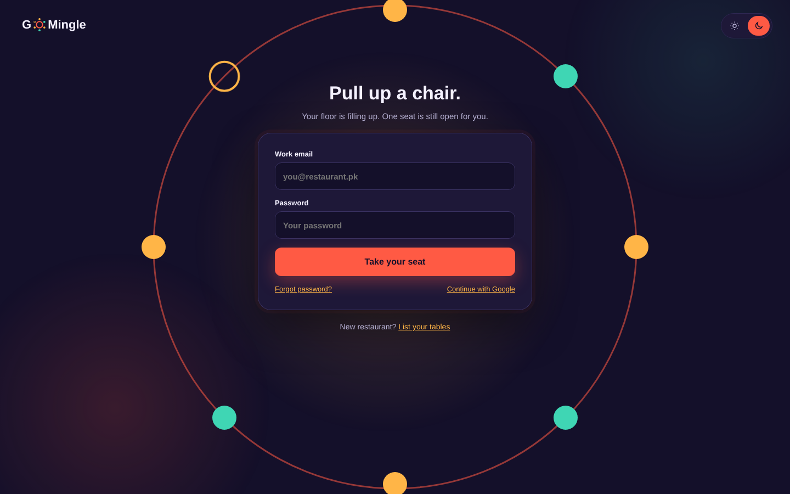
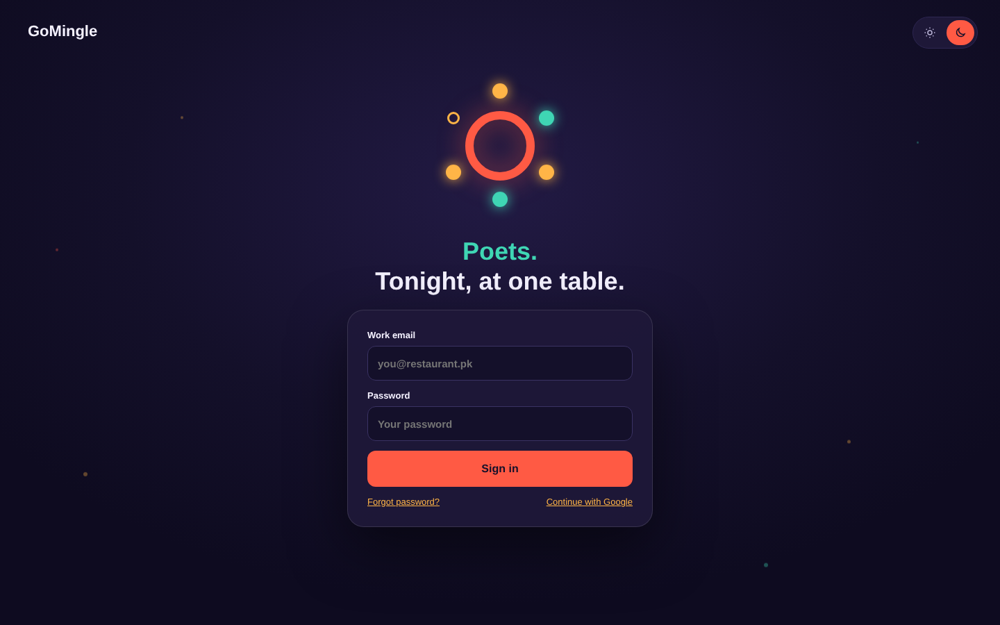
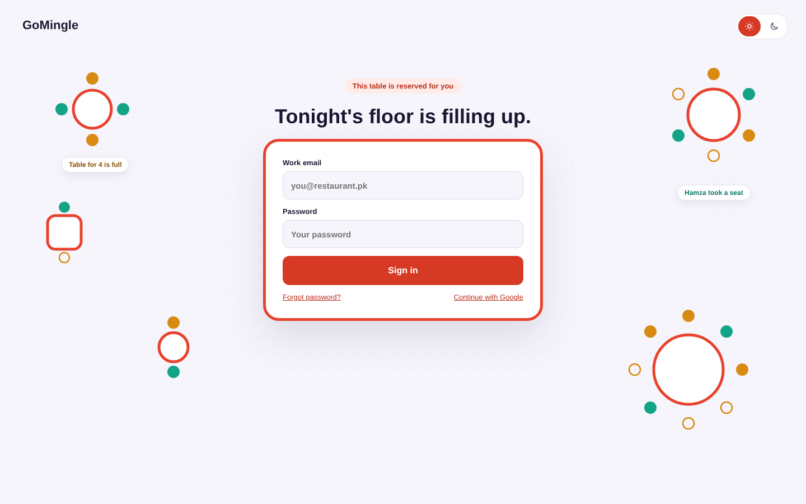
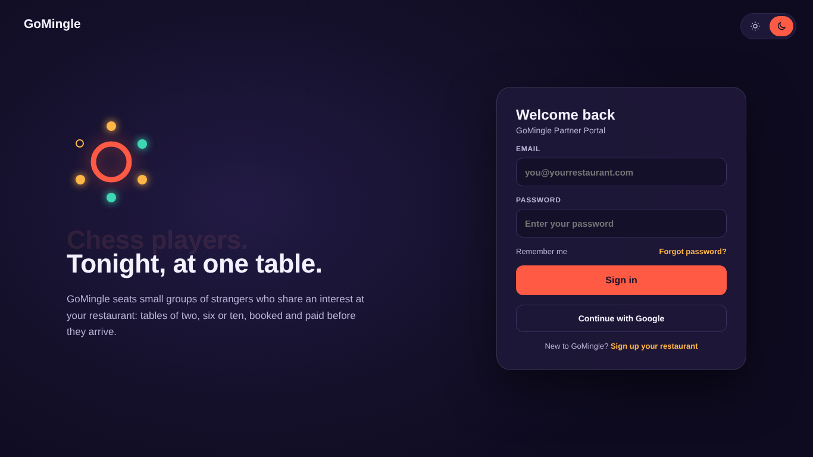
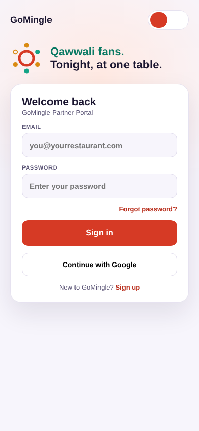

GoMingle Partner Portal: design boards
The Candlelit redesign, November 2026, exported from the design canvas as standalone pages. Open a card to see the full board, with its motion. The shipped screens in light, dark and phone layouts are in screens/.

Candlelit - Partner sign in (dark)Partner sign-in, Candlelit direction (dark): the first full-screen draft. 1440×900
Candlelit - Partner sign in (light)Partner sign-in, Candlelit direction (light). 1440×900
Candlelit - Partner sign upPartner sign-up: the five-step listing flow, shown at step 3. 1440×900
Candlelit - Dashboard (light)Partner dashboard, light. 1440×900
Candlelit - Dashboard (dark)Partner dashboard, dark. 1440×900
Login option A - The table is the stage (dark)Sign-in option A: the table is the stage. Explored. 1440×900
Login option B - Gathering lights (dark) -Sign-in option B: gathering lights, with the rotating guest names. Shipped in v0.12, then refined into option D. 1440×900
Login option C - Tonight's floor (light)Sign-in option C: tonight's floor (light). Explored. 1440×900
Login option D - Side by side, one screen (dark, 1366×768)Sign-in option D, dark: text and form side by side, fits one screen at 1366×768. Chosen and shipped in v0.13.3. 1366×768 Login option D - Side by side, one screen (light, 1366×768)Sign-in option D, light. Shipped in v0.13.3. 1366×768
Login option D - Side by side, one screen (light, 1366×768)Sign-in option D, light. Shipped in v0.13.3. 1366×768

Login option D - Phone (light)Sign-in option D on a phone. Shipped in v0.13.3. 390×844